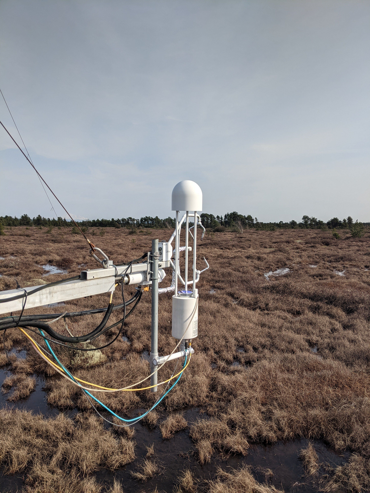

| Points Distribution | Percent of Final Grade |
|---|---|
| iClicker Questions | 10% |
| Lecture Review Quizzes | 20% |
| Lab Assignments | 35% |
| Final Exam | 35% |
Syllabus
GEOS 200 / APBI 244: 2023 W1
with Dr. June skeeter
This course focuses on the physical principles of weather and climate. We cover thermal, moisture and wind dynamics from the global scale down to the scale of ecosystems. We explore daily weather systems and climate change and discuss large scale weather and climate processes relevant to applications in forestry and agriculture.
Learning Outcomes
- Understand the physical and biological processes that determine the microclimate of a surface.
- Explain how microclimates vary in time & space (vertically and horizontally).
- Describe interactions between the biosphere and the atmosphere, and to understand how surface-atmosphere feedbacks respond to environmental change.
- Know the basic principles of widely used biometeorological instrumentation.
- Analyze and interpret data from measurement systems that are used to monitor near-surface climate and surface radiation and energy balances.
- Provide examples how the principles of biometeorology have practical application to society.


Key Information
| Lectures |
|
| Quizzes |
|
| Labs |
|
| Final Exam |
|
Your Instructor
Dr. June skeeter

Pronouns: They/Them/Theirs
Email: june.skeeter@ubc.ca
Office Hours: Mondays 10:00-11:00 via Zoom or in person (Room 127, Geography Bldg) by appointment.
Bio: My name is June. I am a geographer, researcher, and educator who has been living as an uninvited guest on unceded Coast Salish Territory since 2015. I received a PhD in geography from UBC in 2022 and am now working for the UBC Micrometeorology group. I study greenhouse gas exchange in wetland ecosystems and associated feedback mechanisms that influence the earth’s climate system. My principal aims this semester are to give you a broad overview to the dynamics governing of weather and climate and to provide you with a supportive learning environment.
Evaluation
Lab exercises and the final exam will make up the largest portions of your grade, followed the lecture review quizzes and lecture participation will make up the remaining portion of your grade. You can find schedule for lecture quizzes and lab assignments on the Lecture and Lab Assignments pages respectively.
- iClicker questions will be marked based on correctness (25%) and participation (75%)
Course Policies
My aim for this semester is to provide a flexible and supportive learning environment while respecting the boundaries of myself and your TAs. These course policies are intended to establish a framework for navigating the course.
Lab assignments
Labs will be marked by your TA using a standard rubric and short comments will be provided where applicable. Late lab submissions will be penalized 10% per day days after their due date.
- Lab assignments submitted by the due date will be graded and returned with feedback within 7 days of the due date.
- Late submissions are note guaranteed to be returned within 7 days.
Quizzes
Lecture quizzes are to be completed during the scheduled lecture period. You will have 25 minutes to complete the quiz. Quizzes are open book, but please make sure to follow the guidelines below on Academic Honesty. Answers to quizzes will be reviewed at the start of the following lecture session.
- You can complete the quizzes in-person or remotely.
- Because answers to quizzes will be reviewed in class you cannot make up missed quizzes.
- However, lowest scoring lecture quiz will be dropped.
Participation & Absences
If you are sick (with COVID or otherwise), please stay home to protect others and take care of yourself. Lectures are streamed on zoom so that you may still attend online and participation credit. Lecture recordings are also here. If you miss a lab session, you may attend an alternate session, but make sure to check in with TA running that session.
- Participation points are only available during the lecture session. Makeup points will not be offered, but I will offer bonus participation points a the end of term which you can use to compensate for an absence or two.
Accommodations
Please contact the Center for Accessibility if you require accommodations for a disability. Once you are registered please make me aware of any necessary accommodations by email in a timely manner.
- If you require an accommodation please contact me by email: june.skeeter@ubc.ca
Academic Concessions
If you experience extenuating circumstances that prevent you completing course work, you may be elidible for an Academic Concession.
- I can make accommodations on a case by case basis, but it is your responsibility to communicate your needs in a timely fashion (i.e. before a due date).
- Please email me promptly (june.skeeter@ubc.ca) so that we can work together to figure out an accommodation for your situation.
- You are not obligated to explain your personal circumstances to me to justify the concession, my intent is to be accommodating. However, you must to communicate any need for a concession in a timely manner. If you require multiple concessions I may refer you to Arts Advising.
Academic Integrity
The academic enterprise is founded on honesty, civility, and integrity. As members of this enterprise, all students are expected to know, understand, and follow the codes of conduct regarding academic integrity. At the most basic level, this means submitting only original work done by you and acknowledging all sources of information or ideas and attributing them to others as required. This also means you should not cheat, copy, or mislead others about what is your work. Violations of academic integrity (i.e., misconduct) lead to the breakdown of the academic enterprise, and therefore serious consequences arise and harsh sanctions are imposed.
Plagiarism and cheating will be taken very seriously. The first incident of plagiarism/copying/cheating will result in a zero for the assignment. Further incidents will be reported to the President’s Advisory Committee on Student Discipline in addition to a zero. A more detailed description of academic integrity, including the University’s policies and procedures, may be found here
Though you may work together with your classmates on the assignments and help each other, ALL STUDENTS MUST SUBMIT THEIR OWN ORIGINAL WORK. This means that your maps must be your own, and your answers must be in your own words. Failure to submit your own work can result in failing the assignment or worse, so please be careful. See the Academic Integrity section of the Syllabus for more information.
Strategies for Success
Be proactive!
- Keep track of deadlines & note the late submission policies
- Timely communication is important! If you have an issue, please bring it to my attention.
- Partial credit is better than no credit. If you can’t finish a lab before the deadline - just submit what you’ve got done already.
- Drop by office hours & ask questions!